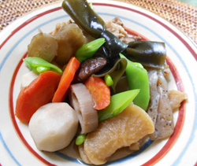

鶏手羽の中肉と冬野菜の
煮しめ
煮しめ
- 調理時間：40分
- （一人当たり）
- カロリー：348kcal
- たんぱく質：30g
- 脂質：9.1g
- 炭水化物：40.3g
- 塩分：1.9g


＜２人分＞
- 鶏手羽中
- 200g
- ・干し大根（水でもどす）
- 20g
- ・ごぼう（乱切り）
- 50g
- ・ニンジン（乱切り）
- 50g
- ・レンコン（乱切り）
- 50g
- ・干ししいたけ
（水でもどし、軸を切って半分に切る） - 4個
- ・結び昆布（水でもどす）
- 2本
- ・里芋
(皮をむいて乱切り。塩もみする） - 80g
- ・こんにゃく
(下茹でした後、一口大にちぎる） - 50g
A
- スナップエンドウ
（サッとゆがく） - 3本
- サラダ油
- 適量
- だし汁（ひたひた程度）
- 300ml
- ・醤油
- 大さじ1
- ・みりん
- 大さじ1
- ・砂糖
- 小さじ2
- ・塩
- 少々
B


- 鶏手羽中は、塩（分量外）をふっておく。
- 野菜、こんにゃくは、各々下準備をする。
- 鍋を熱して、サラダ油を入れ、鶏手羽中を入れて炒めて、一旦取り出す。
- 鍋にサラダ油を入れ、Aの野菜を入れて炒める。
だし汁とBを入れて落し蓋をし、中火で１０分位煮る。 - ①の鶏手羽中を鍋に戻し、さらに１０分程度煮込み、食材がやわらかくなったら蓋をとり、火を強めて水分をとばし、煮汁を絡める。
お皿に盛り付け、スナップエンドウを飾る。
鶏手羽の中肉と冬野菜の煮しめ
「煮しめ」という名前の由来は、煮汁がなくなるまで時間をかけてじっくり煮る、という調理法の「煮しめる」からきています。旬の食材や山のものを使った煮しめは、お正月にはもちろん、お祝い事や節句などに準備される縁起のよい料理です。
お節料理の参の重に入れる煮しめは、鶏肉、根菜類、こんにゃくなど様々な食材を一緒の鍋で煮ることから「家族が仲良く一緒に結ばれ、末永く繁栄しますように」という願いがこめられています。わが家の味をつないでいきましょう。